I love spending my days crafting products that are imbued with style, story, & calm engineering. The best ones balance all their compromises such that they elegantly complement each other.
Previously, I built & led the PM and Design team at Fellow where we beautifully packaged barista-quality power inside a home espresso machine and gently disrupted the drip coffee maker market.
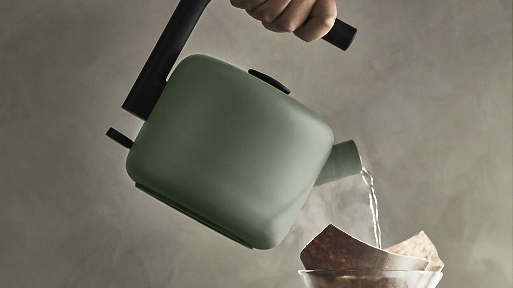
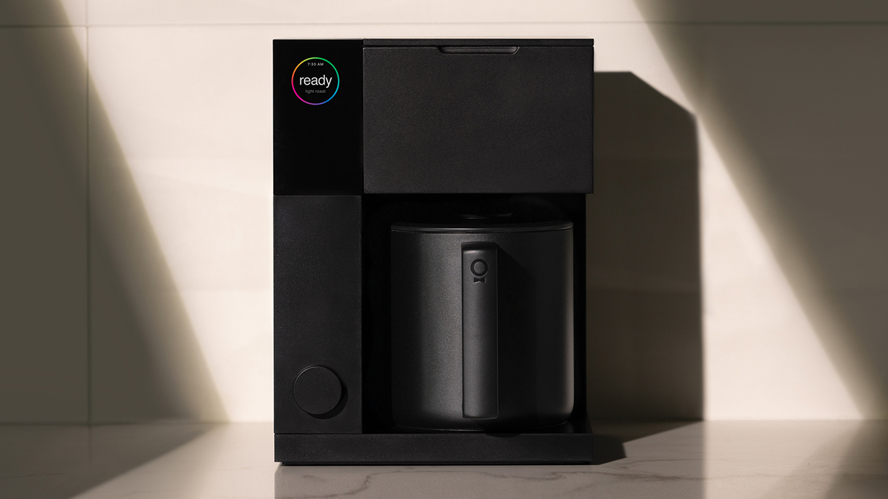

Before that, I co-founded the new Pixel Buds at Google, working with my PM partner to craft the vision, pitch executives to greenlight the program, build the team, and then lead the software & hardware UX until launch.
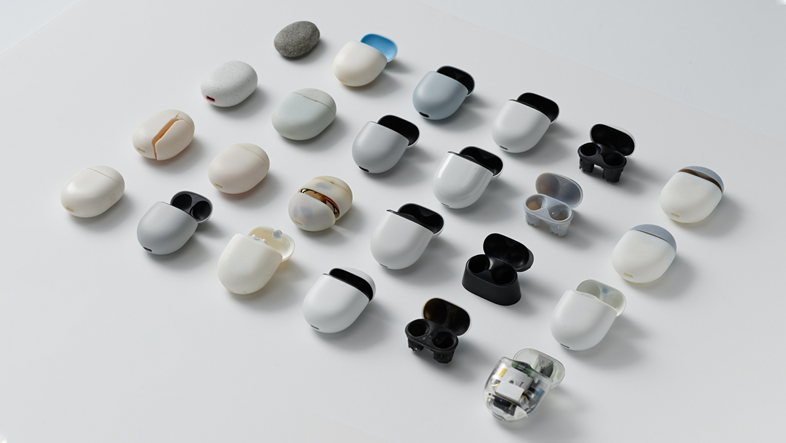
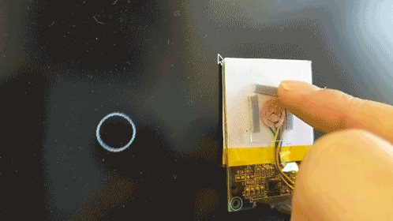
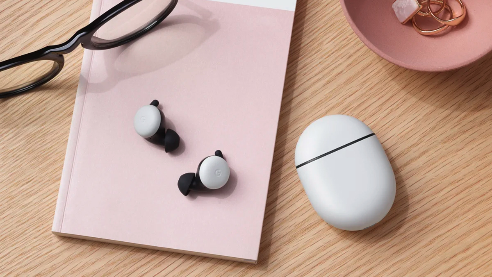
A while back, I lead the design on the Daydream Controller, taking it from just a scraggly sketch in my notebook, through fully interactive hand-built prototypes on my desk, and then through production abroad in China.
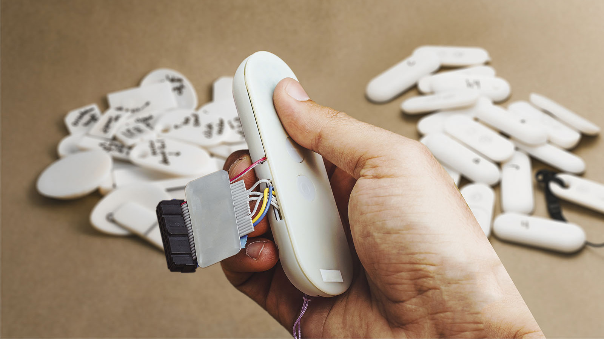
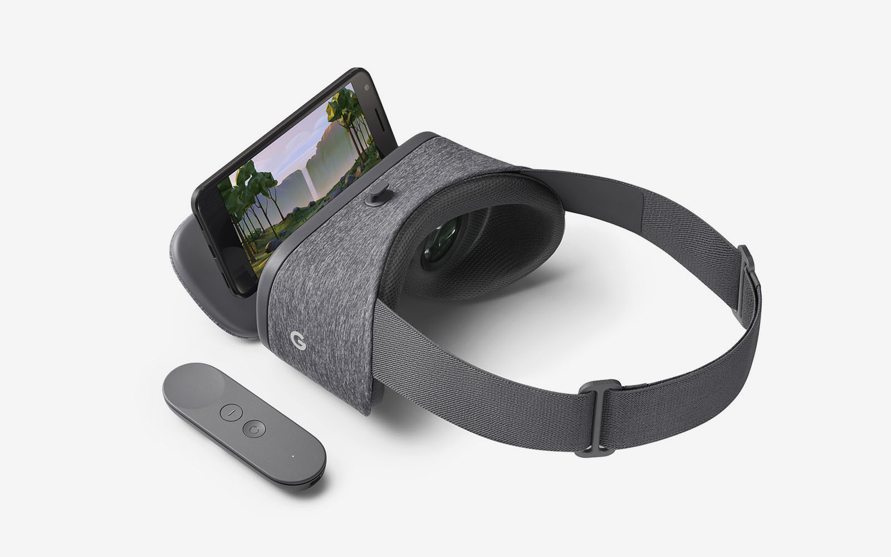
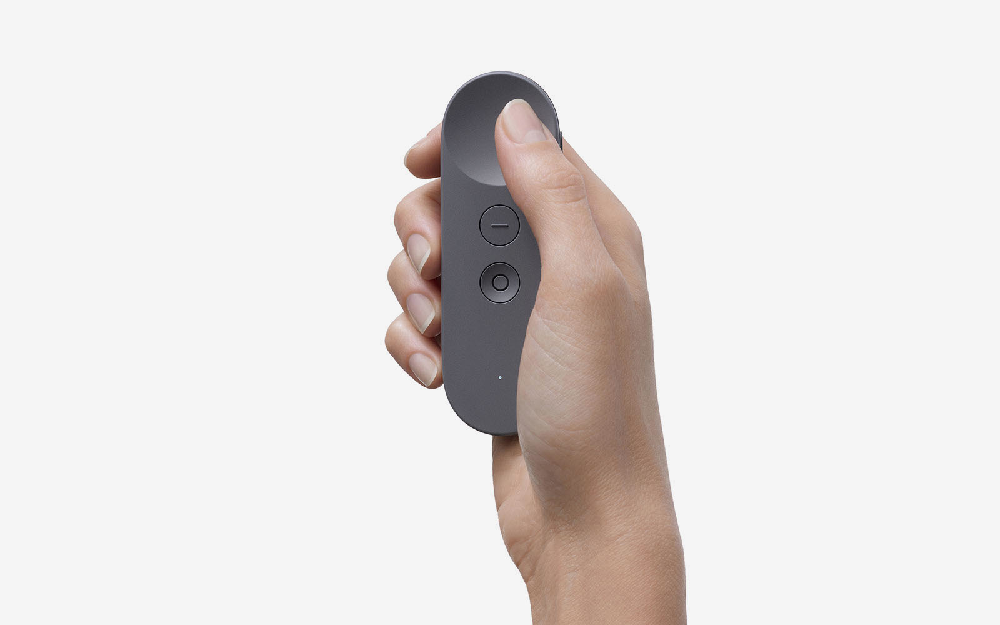
Oftentimes the best design transcends disciplines. In pursuit of that, my practice involves a wide variety of digital & physical skills spread across disciplines: design, product management, electronics prototyping, programming, and analog form-finding techniques.
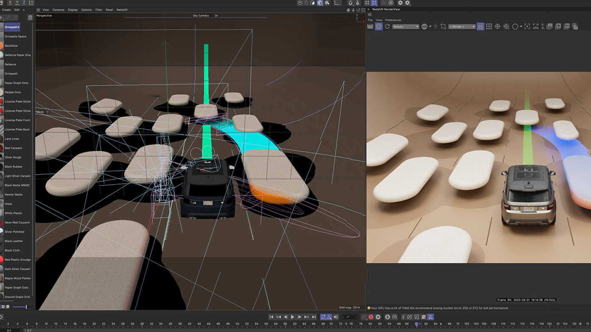
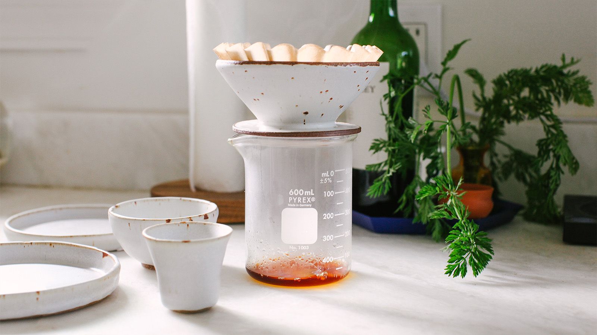
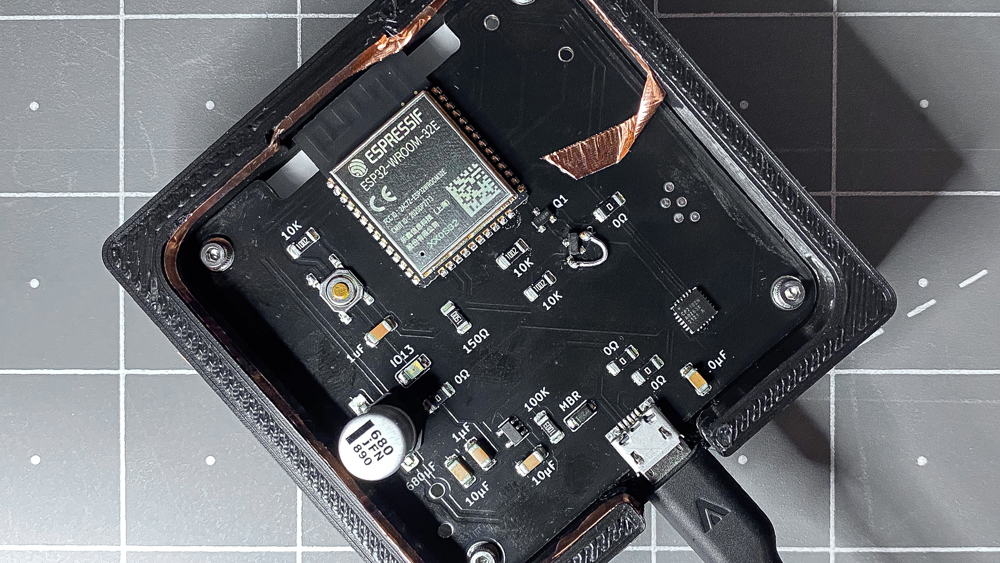
After hours, you'll find me at the wheel throwing pots thicker than I'd like, pointing my camera into the sun, or watching these butter commercials.